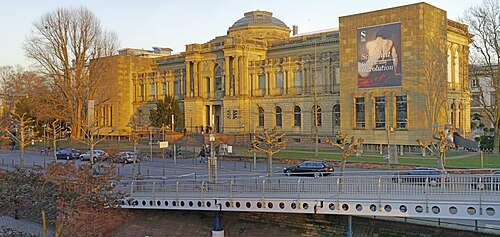
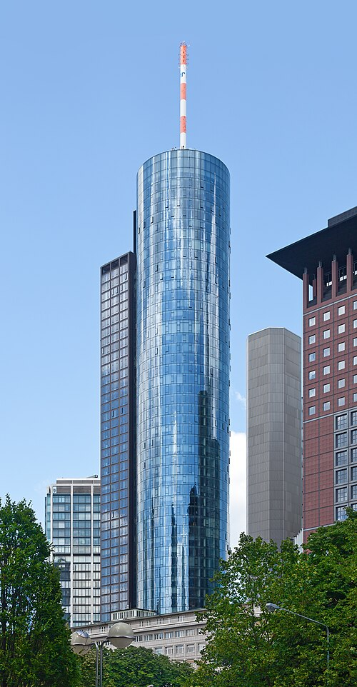
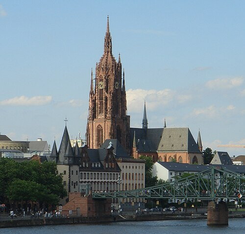

This map shows 16 of the most-searched sights in Frankfurt as photo spots, ranked by how often people search for them: Städel Museum, Main Tower, Frankfurt Cathedral, Alte Oper and Hauptbahnhof lead the list. Every spot has a pin on the subject and a phone icon showing where to stand, with tips for shooting it on your phone: which lens to use, how to frame it, a settings tip and the best time of day. Directions and Navigate buttons take you to the standing point on foot or by public transport. 3 spots are free to view; the full map is for members.
The 3 free photo spots
1Städel

The Städel is one of Frankfurt's oldest museums and has one of the most important art collections in Germany. It was founded in 1817 after a bequest from the banker and art patron Johann Friedrich Städel. The main building on Schaumainkai dates from 1878 and is in the Neo-Renaissance style. It was badly damaged in the Second World War and rebuilt in 1966. A modern underground wing opened in 2012. The museum stands on the Sachsenhausen bank of the Main, in the row of museums known as the Museumsufer.
For a phone photo, the best idea is to shoot from the tree-lined riverside promenade. From there you can fit the Städel and its neighbouring museums into one picture, with the high-rise skyline rising behind them. The sandstone-coloured facade also looks good when you frame it closer, with the garden leading the eye towards the building. Late afternoon is said to warm the museum row, so that is a good time to aim for.
The promenade is a street, so watch for passing cyclists and walkers while you line up your shot. Take a couple of frames with different amounts of sky and skyline, then pick the best one later. If the front is busy, try the Holbeinsteg footbridge side of the embankment as a quieter alternative.
Where it is: The Städel is in Sachsenhausen, on the south bank of the River Main, along Schaumainkai in the Museumsufer row of museums.
Shooting it on your phone
Lens: Start with the default lens (1x) for the museum with the skyline behind it. Switch to ultra-wide (0.5x) if you want the whole museum row, and use 2x or 3x telephoto to pick out the facade or details.
Where to stand: Stand on Schaumainkai (south bank promenade of the Main, in front of the museum row). The Städel and neighbouring museums in a row, with Frankfurt's high-rise skyline rising behind them. The south bank promenade of the Main, in front of the museum row. From here you can see the Städel and its neighbouring museums in a row, with Frankfurt's high-rise skyline rising behind them. The museum itself lies to the south-east.
Framing: Turn on the gridlines and place the museum row along the lower third, leaving room for the skyline above. Use a tree or the line of the promenade as a frame or a leading line. For a closer shot, aim at the sandstone facade and let the garden lead the eye to the building. The Holbeinsteg side of the embankment is a possible quieter angle if the front is crowded.
Settings tip: Tap on the facade to set focus, then slide the exposure down a little so the sky and the skyline keep their detail. If the lines of the building lean in, step back and use 1x or 2x rather than ultra-wide.
Best time: Late afternoon, when one guide notes that the light warms the museum row.
2Main Tower

Main Tower is the only skyscraper in Frankfurt with a public viewing platform, and it is a good subject for a phone because its shape is so easy to read. It rises 200 m over the Innenstadt district, or 240 m with the antenna spire included. From a distance it looks like two towers joined together. The smaller one is a plain cuboid in a 1970s style. The taller one is round, clad in blue glass and topped by the transmission mast. Together they give you straight edges, curves and reflections in one frame.
The tower was built between 1996 and 1999 and is named after the nearby River Main. It has two public viewing platforms. If you go up, check the official site before you go for access details. The foyer also holds two public artworks, a video installation by Bill Viola and a wall mosaic by Stephan Huber.
For photographs, the phone icon on the map marks the centre of the tower's footprint, so the best positions are on the surrounding streets, where you will be looking up at the building. That gives a dramatic angle, but it can be hard to fit the whole building in. Step back along the street where you can, and use the ultra-wide lens for the full height. Then switch to the telephoto lens for close-ups of the blue glass and the point where the two parts meet.
Where it is: Main Tower stands in the Innenstadt (city centre) district of Frankfurt, close to the River Main, which gave it its name.
Shooting it on your phone
Lens: Start with the ultra-wide (0.5x) to fit the tower's height in from close range. Use the default lens (1x) for a more natural view from further back. Use the telephoto (2x-5x, depending on your phone) for details of the glass and the spire.
Where to stand: Stand right at the subject: the phone icon on the map marks the spot. The subject is the tower itself, so stand on the street right next to the building, where it rises above you. For the whole tower, step back along the street until the top fits in the frame, keeping the tower centred.
Framing: Turn on the gridlines and line the tower's edges up with the vertical lines. Hold the phone as upright as you can, because tilting it back makes the sides lean inwards. Try one frame that shows both the cuboid part and the round blue part, and another that fills the picture with just the glass.
Settings tip: Tap the bright sky to set focus, then drag the exposure slider down a little so the blue glass keeps its colour and the sky does not wash out. Hold the phone steady against your body or a wall for sharp shots.
Best time: Clear daylight shows the blue glass at its strongest. Around sunset or dusk, with the sky still colourful and the building lit, switch on night mode and hold very still.
3Frankfurt Cathedral

Frankfurt Cathedral, known in German as the Dom, is the city's largest religious building. It is a Gothic church whose tower rises 95 metres above the Old Town. Despite the English name it has never been the seat of a bishop. It earned the nickname Kaiserdom because Holy Roman emperors were elected here from 1356, and crowned here from 1562 to 1792. The church was built in the 14th and 15th centuries and rebuilt after a fire in 1867. It was badly damaged in the Second World War and rebuilt again in the 1950s.
It photographs well from the Römerberg, where the tower stands up behind the reconstructed half-timbered houses, with the Römer town hall closing in one side of the frame. Those houses stand where the old half-timbered streets were largely destroyed in 1944, so the picture also tells a story of rebuilding. A tall, vertical shot works well, letting the timber facades lead the eye up to the spire.
Stand on the square, face east and take a few frames at different zoom levels: one wide for the setting, one closer for the tower. If the square is busy, wait a moment for a gap, or try the small square in front of the church, which one guide describes as less crowded. The Eiserner Steg gives a distant view over the river if you have time to walk.
Where it is: The cathedral stands in the heart of Frankfurt am Main, in the Old Town. The Römerberg square, with the Römer town hall, is a short walk to the west.
Shooting it on your phone
Lens: Start with the default lens (1x) to show the houses and tower together. Switch to the telephoto lens (2x-5x, depending on your phone) for a tighter shot of the spire. Use the ultra-wide lens (0.5x) only if you want a lot of the square in the frame.
Where to stand: Stand in Römerberg (Looking east across the square toward the cathedral tower, with the half-timbered houses in the foreground). The cathedral's Gothic tower rising behind the reconstructed half-timbered houses of the Old Town, with the Römer town hall framing one side. From here the cathedral's Gothic tower rises behind the half-timbered houses, with the Römer town hall framing one side.
Framing: Turn the phone upright and switch on the gridlines. Put the tower on one of the vertical lines and let the timber facades fill the lower part of the frame, leading up to the spire. For a different angle, try the small square in front of the church, which one guide describes as less crowded.
Settings tip: Tap the tower to set focus, then slide the exposure down a little if the sky looks washed out. After dark, use night mode and hold the phone as still as you can, resting your elbows on something solid.
Best time: One guide recommends the morning, when light falls on the facades. Blue hour, when the spire is lit, is also recommended. Light can vary, so check conditions on the day.
13 more spots for members
These spots are on the map as grey numbered pins. Where to stand, the phone tips, photos and directions for them come with Explorer membership.
- 4Alte Oper · members
- 5Frankfurt Hauptbahnhof · members
- 6Eiserner Steg · members
- 7Goethe House · members
- 8Römer · members
- 9Hauptwache · members
- 10Commerzbank Tower · members
- 11Römerberg · members
- 12St. Paul's Church · members
- 13Schirn Kunsthalle Frankfurt · members
- 14Eschenheimer Turm · members
- 15Old St. Nicholas Church · members
- 16New Frankfurt Old Town · members
Get every spot with Explorer membership
Explorer opens every spot on every map in the library: where to stand, how to frame it on your phone and how to get there, plus the Xdatrys Maps app with maps saved on your phone for use without signal. $9.99 a month or $59.99 a year; cancel any time.
Join Explorer Compare free and Explorer
Not ready to join?
Get Pocket Lens, our free daily smartphone travel photography newsletter.
Free, and you can unsubscribe at any time. If the form does not show, sign up on our newsletter page.
Questions
What are the top photo spots in Frankfurt?
The first three on this map are Städel Museum, Main Tower and Frankfurt Cathedral. They are ranked by how often people search for them. The full map has 16.
Where should I stand to photograph Städel Museum?
Stand on Schaumainkai (south bank promenade of the Main, in front of the museum row). Start with the default lens (1x) for the museum with the skyline behind it.
When is the best time to photograph Main Tower?
Clear daylight shows the blue glass at its strongest. Around sunset or dusk, with the sky still colourful and the building lit, switch on night mode and hold very still.
How do I get to Frankfurt Cathedral?
No station or tram stop is listed for this spot, so head for the Römerberg in the Old Town in the centre of Frankfurt.
Credits
Map data © OpenStreetMap contributors (ODbL); base map built with Protomaps from OpenStreetMap data. Photos from Wikimedia Commons, credited under each photo with their licence. Background reading for the free spots: Städel, Main Tower, Frankfurt Cathedral (Wikipedia, CC BY-SA). Access rules and opening times change: check before you go.